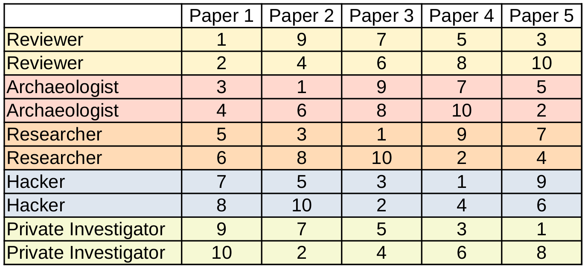

Course Information
Description
This seminar is addressed to master students of Scientific Computing and Mathematics. We view Machine Learning from a mathematical point of view and discuss how we can relate it back to well studied mathematical concepts. This semester the focus topic is „Selected famous papers in Machine Learning". Together we explore various aspects of the selected papers, e.g. content, authors, references, related research, etc.
The seminar style will be similar to what is described in: https://colinraffel.com/blog/role-playing-seminar.html
We have selected five roles. For more details on the roles we refer to the preparatory meeting. Each participant will get assigned a number, and fill each role one time.
Topics
In every meeting we will study a famous Machine Learning paper.
- Kingma, Ba: Adam: a method for stochastic optimization
- Krizhevsky, Sutskever, Hinton: ImageNet classification with deep convolutional neural networks
- He, Zhang, Ren, Sun: Deep residual learning for image recognition
- Vaswani, Shazeer, Parmar, Uszkoreit, Jones, Gomez, Kaiser, Polosukhin: Attention is all you need
- Radford, Narasimhan, Salimans, Sutskever, others: Improving language understanding by generative pre-training
Exam / Presentations
For a successful completion of the seminar the following are mandatory:
- participation in discussions (75%),
- a written documentation of your roles (25%).
Your final grade will be a weighted sum of the above mentioned performances.
Dates and Timeline
- Organizational meeting: April 18th 2023 at 6pm in Mathematikon 2.414.
- Participation in this meeting is essential to attending the seminar.
- During this meeting the regular seminar dates will be chosen from the options below, and the roles will be assigned.
- Due to the interactive style of the seminar it is mandatory to attend every meeting in person.
- If you have questions, please don’t hesitate to contact us.
Meeting dates are:
- Wednesday 16:30-18:00 (17.5., 7.6., 14.6., 28.6., 12.7.) in Mathematikon Seminar Room 4.
(Pre-)registration
If you are interested in participating in this seminar, please pre-register via Müsli, so we know how many participants we can expect. You will finally register for the class when you have been assigned a role number.